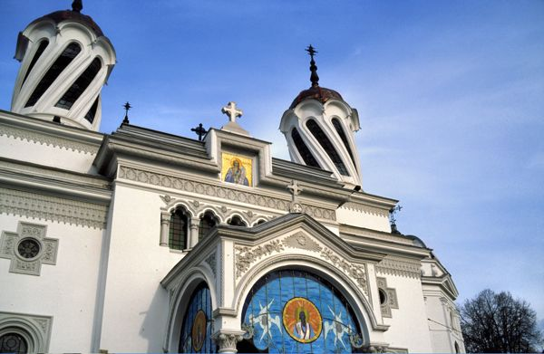 Bucharest is the capital of Romania, as well as its largest city. For the traveller interested in seeing historical places, Bucharest is perhaps less interesting than other places in Romania. War, earthquakes, and the Communist government have reshaped Bucharest, leaving most of the historic city replaced with more modern building projects (Ceauşescu was bizarrely inspired by North Korean urban planning!).
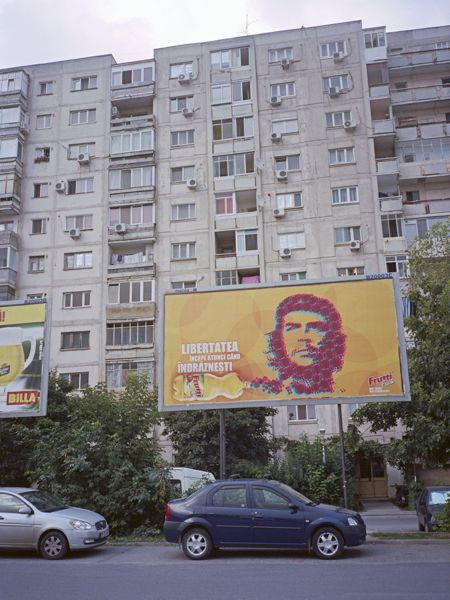
Typical later-Communist-era residential building in Bucharest.
However, in spite of some of the crude signs of rapid growth and development, Bucharest is also Romania's most vibrant city, buzzing with economic and cultural activities and many young people at its growing number of cafés, bars, and restaurants.
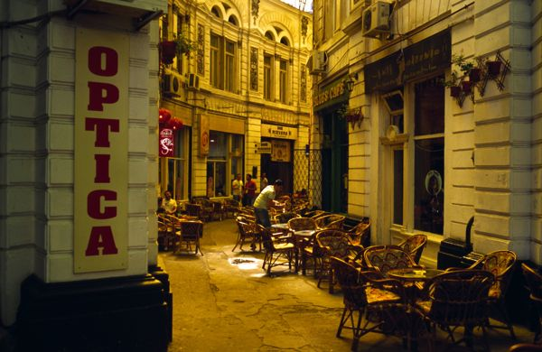
Markets
Across Romania, open and covered markets can be found in many towns and villages. With over two million people, Bucharest has many such markets, offering all sorts of fresh and prepared foods—often from the producer—as well as more flea-market type offerings. If you want to enjoy a truly Romanian everyday experience, visit a market and try some of what is there.
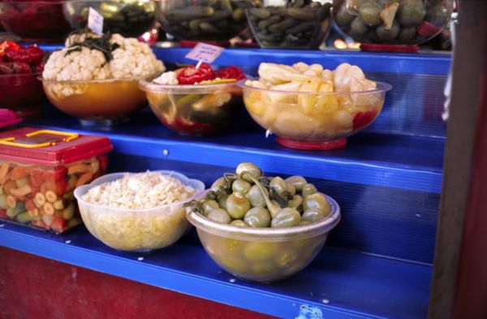
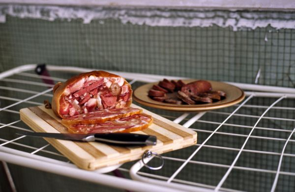
Toba purchased at local market.
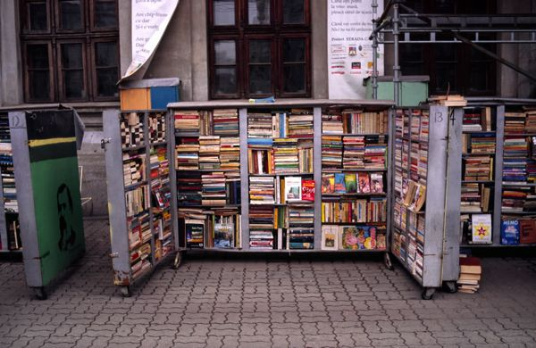
Markets aren't just for food. Books, flowers, and other items can also be found.
Saxon Towns
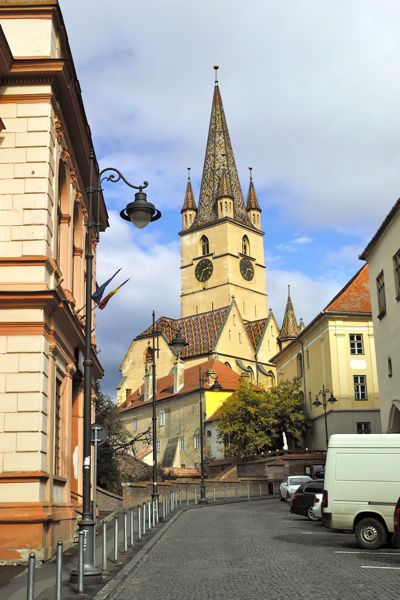 From the twelfth century until well into the twentieth century, a signification portion of the Romanian population was ethnically German. These Germans were called "Saxons" after some of the initial groups and Hungarian officials who were Saxon, but the majority were not in fact from Saxony. They lived throughout Transylvania in towns and villages. As populations grew and in response to invasions, they fortified their towns. The German name for Transylvania, Siebenbürgen, comes from the seven larger fortified towns. Among these, the most interesting to visit are probably Sibiu, Sighişoara, and Braşov.
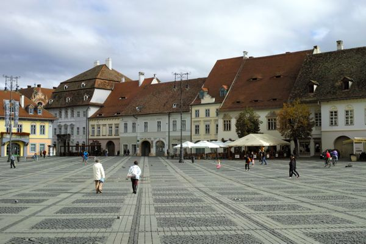 Sibiu might be the best of the Saxon towns for a visit, boasting two beautiful squares and many well-preserved side streets around the city center. It also has a fascinating open-air ethnographic museum where one can see traditional village architecture from the region. Although they can be seen elsewhere, another noteworthy feature of Sibiu is the prevalence of the "eye" windows.
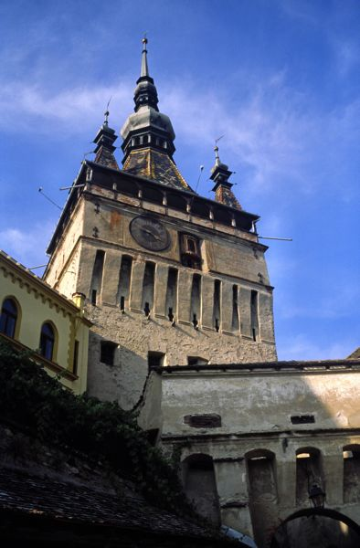 Smaller than most of the other seven cities, Sighişoara is particularly noteworthy for its well-preserved historic center, still surrounded by the city walls, and is a UNESCO World Heritage site. It is also the birthplace of Vlad Ţepeş (Vlad the Impaler), who partially inspired Bram Stoker's Dracula, leading to some occasionally kitschy displays, festivals, and the like. But everyone's life needs a little bit of Kitsch!
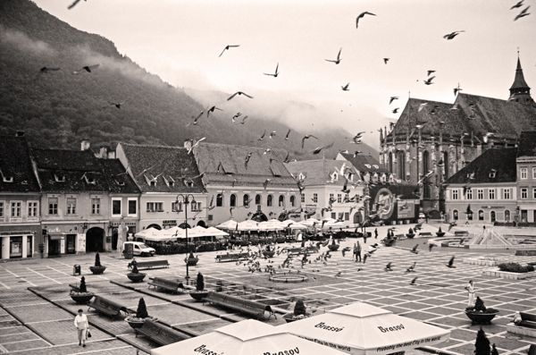 Braşov has perhaps the most beautiful city square in Romania. The city itself might seem a bit more intimidating, especially for driving in, because it is several hundred thousand people, but the historic center is very walkable and worth the effort.
Bran is a few miles outside of Braşov, easily reachable from the city's center by bus or by car. It is often advertised as "Dracula's Castle" because of its striking look, but the connection to the actual Vlad Ţepeş is tenuous at best.
Beyond the larger fortified towns, the Transylvanian Saxons had hundreds of villages, many of which needed their own protection. The typical method was a fortified church, combining a place of worship with a stronghold to flee to in the village center. Hundreds of these fortified churches still exist, in various states of preservation. Seven of the best-preserved and most spectacular were designated a collective UNESCO World Heritage Site.
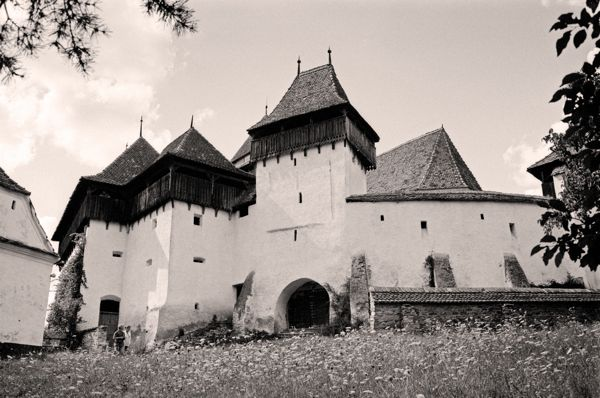
The fortified church at Viscri.
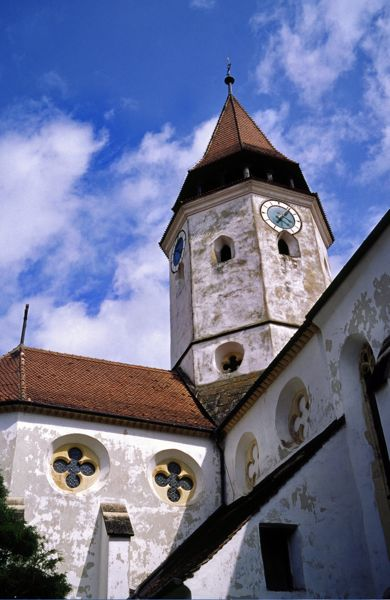
The fortified church at Prejmer.
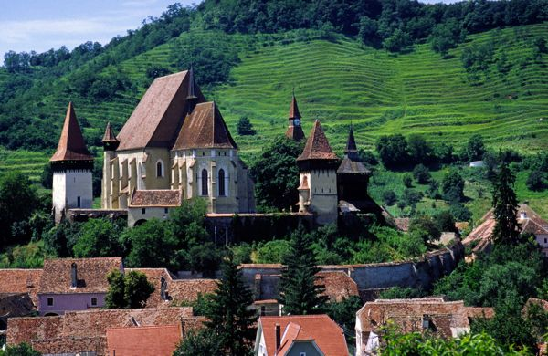
The fortified church at Biertan, perhaps the most impressive of the UNESCO-selected churches.
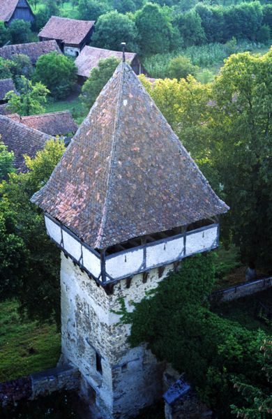
The fortified church at Meşendor, which is not among the World Heritage sites and is not preserved as well as the others pictured here.
Beautiful Countryside and More
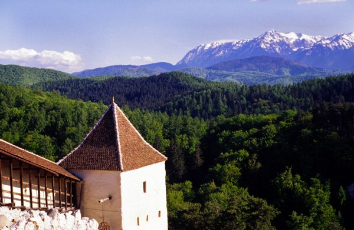 The previously mentioned places are only a few of many possible things to see in Romania. Get out and explore!
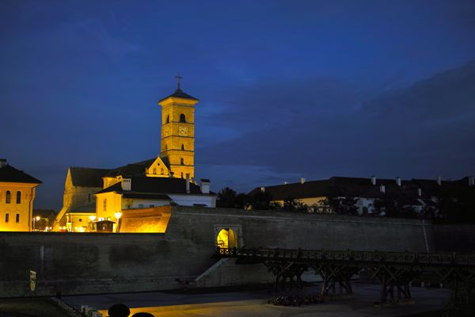 Due to some recent restoration through European Union programs, Alba Iulia has become one of the best places to visit in Romania. At its center is a massive Hapsburg-era fortress, beautifully restored and perfect for strolling. Within the fortress and on nearby streets are delightful cafés and bars. Alba Iulia is also the location where modern Romania was created, with the signing of the post-World War I reunification. The Orthodox Reunification Cathedral was built in the early 1920's to celebrate the act.
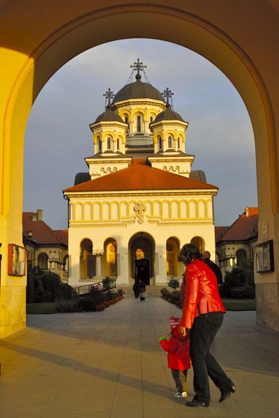
It's also a great building to get married in!
Bounty of the Land
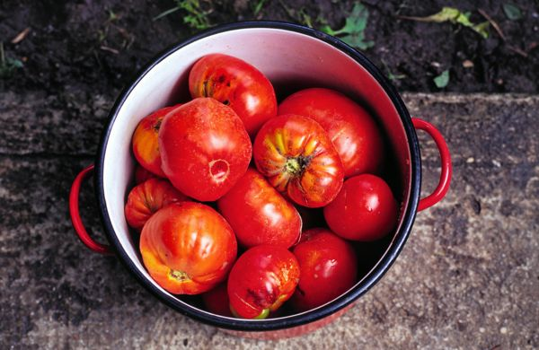Romania has a wide range of farmlands. While many places have modern equipment and crops, there are also areas that farm traditionally. The adventurous tourist can discover villages where herders take animals up into the hills to graze during the day, and bring them back to the individual owners at night for milking and bedding down. Fresh fruits and vegetables are grown in both large gardens and for commercial sale at markets.
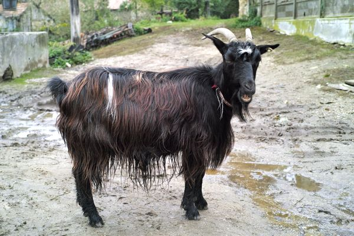
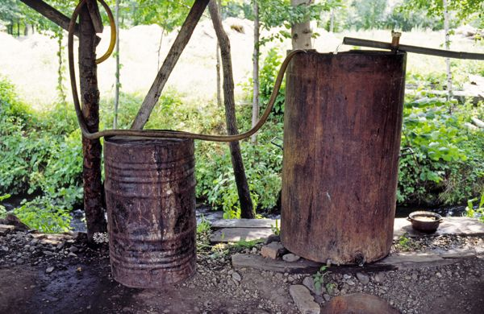
A still for making ţuică.
More!
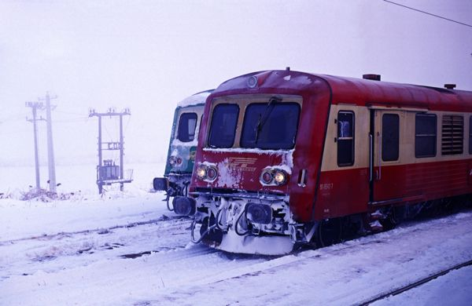 Many things have remained unmentioned, like the many monasteries and abbies, the churches of Moldavia, the wooden churches of Maramureş, non-Saxon fortresses like at Hunedoara and Râşnov, the Danube Delta, etc., etc., etc.
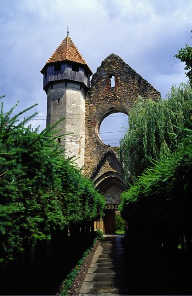
The abby at Cârţa.
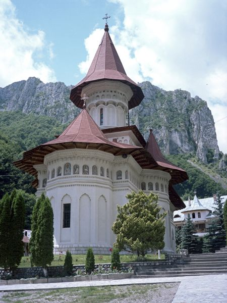
The Monastery at Râmeţ.
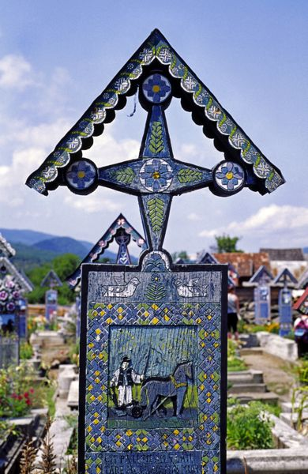
The Merry Cemetary (Cimitirul Vesel) in Maramureş.
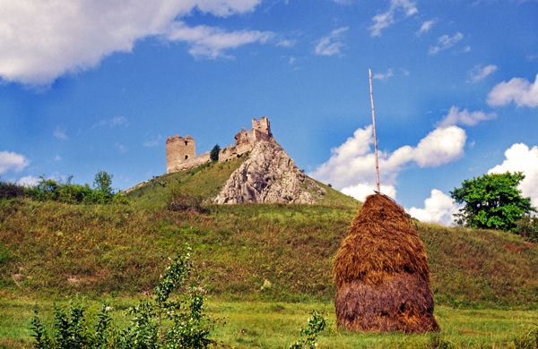
Trascăului Castle.
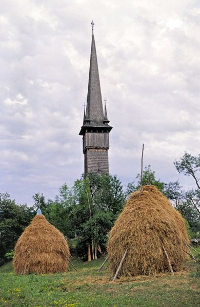
UNESCO World Heritage Site of wooden churches in Maramureş.